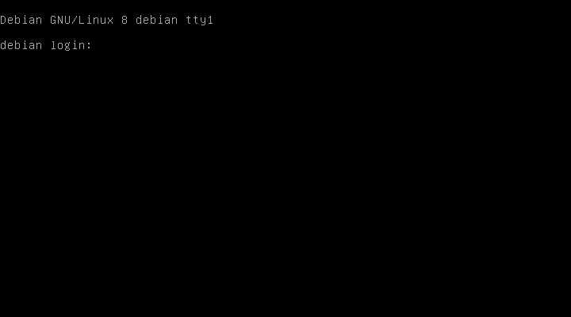

2.2.6. Interfaz de usuario¶
La interfaz es el elemento del sistema operativo a través del cual interactúa el usuario con el propio sistema. A grandes rasgos, tal interfaz debe permitir al usuario:
Identificarse.
Ejecutar programas y recibir el resultado de los mismos.
Administrar el propio sistema.
Las principales interfaces de usuario son:
De línea de comandos (abreviado CLI) o en modo texto o, simplemente, consola[1].
Gráfica (abreviado GUI).
Táctil, que tuvieron un uso bastante marginal hasta la irrupción de los dispositivos móviles.
Web.
Otro término para referirse a las interfaces de usuario es shell (concha en inglés), aunque más comúnmente refiere exclusivamente interfaces de texto y, particularmente, al intérprete de comandos de las interfaces de texto[2].
2.2.6.1. CLI¶
Son las interfaces más antiguas y se componen de una pantalla capaz de representar caracteres y un teclado para que el usuario pueda introducirlos. A pesar de su antigüedad suelen ser la interfaz con las que se administran y configuran servidores dada su versatilidad y los escasos recursos que consumen.
En los sistemas de escritorio (o sea, los sistemas en los que la interfaz predominante es la GUI), también es posible acceder a una shell. Por lo general, se hace a través de programas gráficos denominados emuladores de terminal que presentan la interfaz de texto. En estos casos, el emulador puede usarse tanto para administrar la propia máquina, como para acceder remotamente a un servidor para su administración.
En estas interfaces es preciso distinguir entre dos componentes:
El programa que habilita la existencia de la propia interfaz, que es el emulador de terminal ya referido.
El intérprete de comandos, que es el programa que se encarga de permitir la introducción de órdenes dentro del emulador de terminal e interpretar la orden introducida para pasarla al sistema operativo.
Sistema operativo |
Emulador de terminal |
Intérprete de comandos |
|---|---|---|
MS-DOS
Windows 9*
|
- |
command.com |
Windows (rama NT) |
? |
cmd.exe
powershell
|
UNIX |
xterm
Terminal (MacOs v10)
lxterm
gnome-terminal
konsole
|
sh, ash, dash (POSIX)
bash
csh, tcsh
ksh
zsh
|
Sin ánimos de ser exhaustivos, porque utilizaremos esta interfaz al practicar con los sistemas operativos, su mecánica es bastante sencilla:
La terminal presenta un prompt[3] que informa al usuario de algunos aspectos relevantes. Por lo general, de quién es, en qué máquina trabaja y cuál es su directorio de trabajo.
Un cursor tras el prompt denota que el sistema está a la espera de que el usuario dé alguna orden.
El usuario da la orden introduciendo una constituida por el nombre de un programa y una serie de parámetros que moldean el comportamiento de esa orden. Al acabar de escribir la orden, pulsa Enter para enviar la orden al sistema y que este la ejecute.
Durante la ejecución de la orden el programa envía a la terminal mensajes de información, advertencia o error que informan al usuario de cuál es el progresa de la tarea.
Al finalizar la orden devolverá al sistema un código que permite conocer al usuario si ésta tuvo éxito o no y, opcionalmente, una salida de texto con el resultado del procesamiento.
La terminal queda libre y presenta un nuevo prompt con un cursor expectante.
2.2.6.2. GUI¶
Las interfaces gráficas habilitan la interacción del usuario con el sistema mediante el uso de unos componentes gráficos (ventanas, botones, etc) y algún dispositivo apuntador como el ratón y se apoyan en el teclado cuando requieren la introducción de texto. Esto, no obstante, supone un mayor costo de recursos, aunque facilitan el uso para el usuario no avanzado. Son las interfaces predominantes en los sistemas de escritorio
Por lo general, las interfaces gráficas presentan unos elementos comunes:
Acceso gráfico que permite la autenticación del usuario.
Un escritorio (o varios) sobre el que se sitúan el resto de elementos gráficos.
Iconos, que son elementos gráficos de pequeño tamaño que representan objetos del sistema tales como archivos o programas. Permiten que la ejecución de un programa o la apertura de un fichero con el programa preseleccionado se limite a seleccionar el icono, en vez de requerir la composición de la orden como en las interfaces de texto.
Ventana, elemento gráfico que muestra la ejecución de un programa y que permite interactuar con él. Las ventanas, a su vez, suelen estar constituidas por componentes estandarizados.
Menú principal, que desglosa las aplicaciones del sistema o de usuario disponibles.
Menú contextual. que es un menú asociado a algunos elementos gráficos que ofrece la posibilidad de llevar a cabo ciertas acciones sobre el elemento.
Barra de tareas, que suele incluir las aplicaciones que se están ejecutando y algunos otros componentes (lanzadores de aplicaciones más frecuentes, controles rápidos, etc.)
Sistema operativo |
Interfaz GUI |
|---|---|
Windows XP |
Luna |
Windows 7 |
Aero |
Windows 8 |
Metro |
Windows 10 |
Fluent |
MacOS |
Aqua |
Los sistemas UNIX no se ha incorporado a la tabla, porque a diferencia de los sistemas anteriores, no tienen una única interfaz GUI y, además, tal interfaz suele descomponerse en elementos independientes:
Un servidor gráfico que es el encargado de permitir la interacción con el ratón y el dibujado de las ventanas. El más usado con diferencia es Xorg desarrollado como fork del servidor XFree86 a partir de 2004.
Un login gráfico para la autenticación que presenta muchas alternativas: gdm, kdm, xdm, lightdm, slim
Un escritorio integrado donde pueden encontrar el resto de componentes gráficos como Gnome, KDE, LXDE o XFCE.
O alternativamente al escritorio integrado, un gestor de ventanas (fluxbox, openbox, enlightment, icewm, fvwm, etc.) y toda una batería de aplicaciones individuales que provean del resto de funcionalidades típicas de las interfaces gráficas. Por ejemplo, el autor de este documento usa:
xorg, como servidor gráfico.
slim, como logín gráfico.
openbox, como gestor de ventanas.
tint2, como barra de tareas.
udiskie, como gestor de volúmenes.
dunst, como notificador de eventos.
volumeicon-alsa, para el control del volumen.
Y no usa en absoluto ni gestor de ficheros (para lo cual prefiere la CLI), ni iconos de escritorio, para lo cual hay también aplicaciones independientes como idesk.
2.2.6.3. Interfaz táctil¶
Diseñada para dispositivos móviles, tienen cierta similitud con las interfaces gráficas, aunque eliminando el concepto de ventana, ya que cada programa suele ocupar la interfaz completa, e incorporando los gestos táctiles sobre la pantalla (pellizco, pulsación) o el movimiento del dispositivo (girar el dispositivo provoca girar el sistema operativo) como modo de aportar información al sistema. En cambio, conservan otros elementos gráficos como:
Escritorio.
Iconos para representar sobre el escritorio a los programas.
Barra de notificaciones.
Notificaciones emergentes que informan de algún suceso (por ejemplo, de algún mensaje entrante).
2.2.6.4. Interfaz web¶
Las interfaces web son las menos frecuentes, ya que se encuentran, fundamentalmente, en sistemas operativos incrustados en dispositivos sin monitor, por lo que el acceso a los mismos debe realizarse de forma remota[4].
La interfaz es simplemente una página web accesible a través de navegador. Es habitual en dispositivos de red y servidores NAS.
Notas al pie